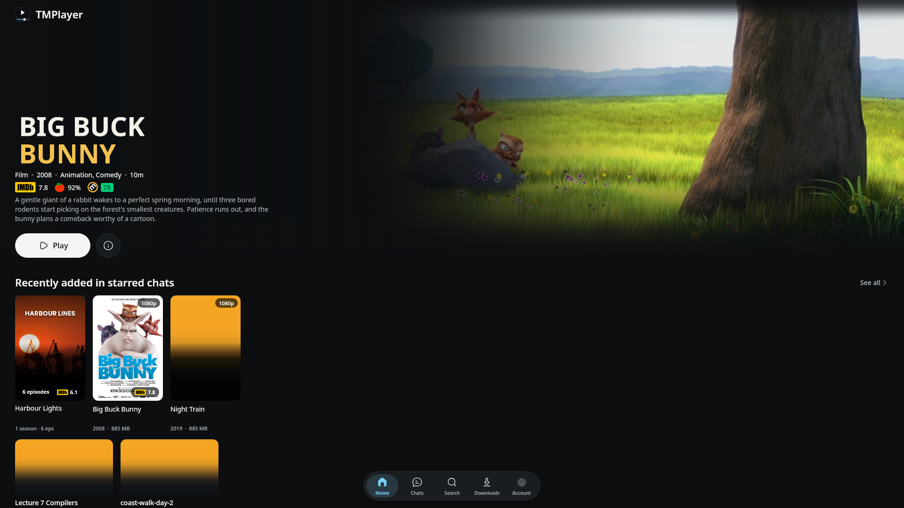
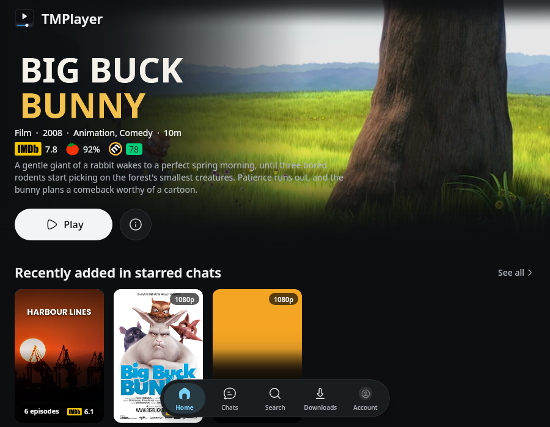
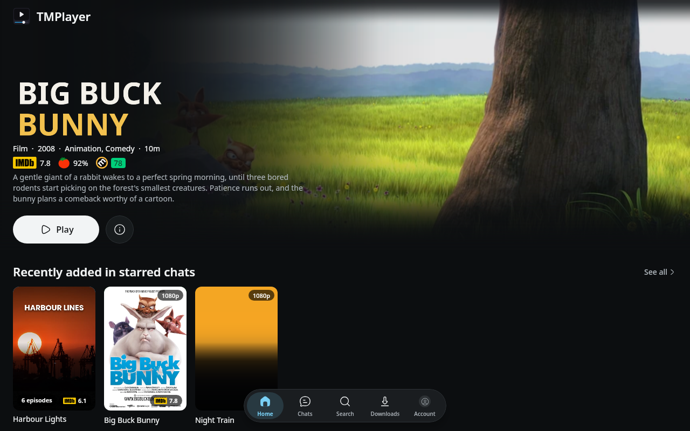
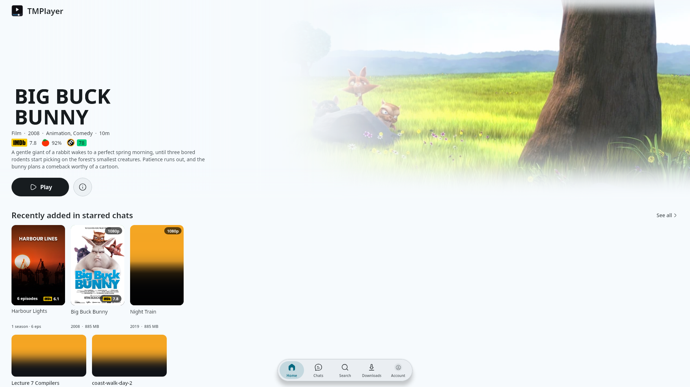
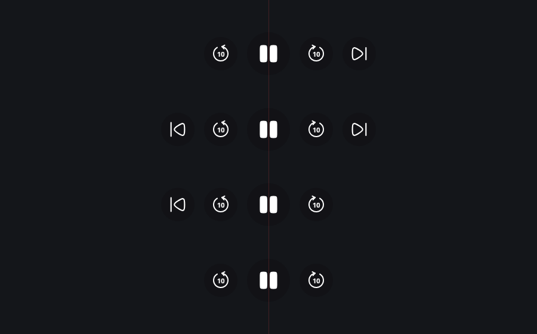

Method: the real app was not driven (a signed-in instance already held the profile and the person was working in the same session), so every check runs as a Compose test with made-up data, and the frames below come from those tests (TMPLAYER_SHOTS). Machine checks use LayoutChecks (shared left and right edges, equal widths, heights, gaps and text sizes, centring, inside-the-parent, tolerance 1 dp).
| Screen | Found placed without a reason | Fix |
|---|---|---|
| Home hero | Words and buttons 10 dp right of the row headings and cards (x 42 against 32); hero 636 dp tall on 1080p, pushing Continue watching under the fold with the artwork spilling under its heading; hard picture edge at the foot | Words on the page gutter; height 58 percent of the window, 360 to 560 dp; start scrim solid at the left, clear by 55 percent of the width; a 96 dp fade into the page; no spill below the frame on the desktop |
| Home headings | See all right edge (1873) against the carousel dots (1885); generic label | See all hangs its 4 dp padding past the gutter so its text ends where the dots do; named for its row ("See all Continue watching") for a screen reader and the tooltip |
| Home, away and back | The layout setting was read again from nothing at every return (rows built empty for a frame, sections cut away and popped back), the scroll place was lost | HomeLayoutMemory gives the first frame the last layout; the rows' scroll place is kept in ShellState |
| Chats list | A pinned chat's pin sat before the name and shifted it 20 px right of every other name | The pin follows the name; names share one edge (LayoutChecksTest) |
| Chats chips | Last chip cut at the window edge with no hint it scrolls | Edge fade over the margins |
| Player transport | No skip buttons for a mouse; with no Previous episode Play and Pause sat off the middle | Five fixed slots, Back 10 and Forward 10 beside Play, a hidden slot keeps its room, Play on the middle of the picture in all four cases |
| Toasts | Toast behind the floating bar; plain pill, no kind | See the toast gallery |





TopMessageHost in NavBar.kt is unused now; it stays until the bar's owner has merged.